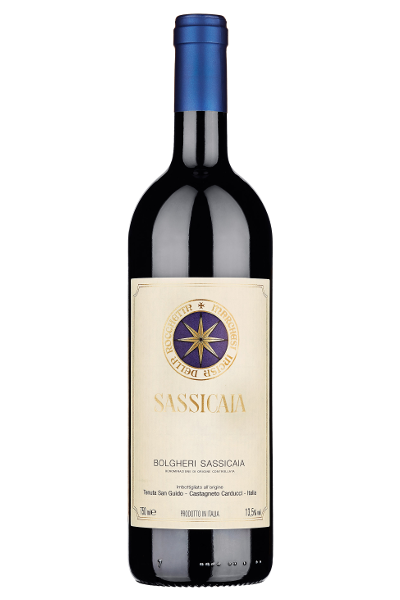

Nato nel 2015 dalla celebre Tenuta San Guido in
Toscana, il Sassicaia Bianco è la versione chiara di un
mito.
È prodotto principalmente da uve Sauvignon Blanc,
ed è caratterizzato da aromi freschi di agrumi, fiori
bianchi e leggere note minerali.
In bocca è elegante e armonico, perfetto per antipasti
di mare e piatti leggeri.
Il Sassicaia Bianco è frutto della stessa filosofia del
suo celebre fratello rosso: rispetto per il territorio,
attenzione maniacale alla qualità e uno stile
inconfondibile.
La presenza del Sauvignon Blanc regala profumi
vivaci e una freschezza che evolve con il tempo,
mantenendo sempre una raffinatezza sobria e
persistente.
